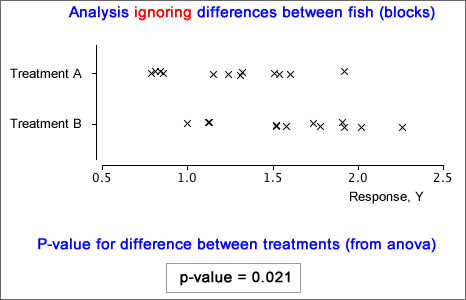
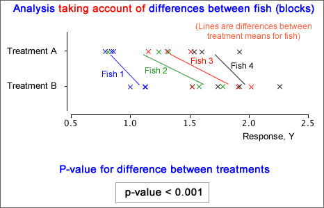

In paired data, each of the two treatments is used once within each block (pair). The previous pages generalised this to more than two treatments, but each treatment was still used once in each block. We now generalise further to allow the block size to be any multiple of the number of treatments.
Reducing unexplained variability
To assess the significance of differences between experimental treatments, variation in the treatment means is compared to the amount of unexplained (random) variation. With less unexplained variation, there is less chance of the differences between treatment means having arisen by chance. There are two ways to reduce unexplained variation:
The simplest way to use blocks in an experiment is with a randomised block design. In this, the block size is a multiple of the number of treatments. Each treatment is used for the same number of experimental units within each block, and the treatments are randomly allocated to units within the blocks.
Example
An experiment was conducted in which the experimental units were intestinal preparations from fish, but each fish would only give six preparations. The six preparations from each fish constitute a block of units. Two treatments were used, with the six preparations from each of four fish randomly split into three preparations for each treatment (a randomised block experiment).
Wrong analysis
Ignoring possible differences between the four fish and treating the data as a completely randomised experiment with 24 experimental units, we would conclude that there is moderately strong evidence of a difference between the two treatments.

Correct analysis
There are considerable differences between the four fish (blocks), with much lower variability within any single fish. The correct analysis is explained later in this section and the resulting p-value gives much stronger evidence of a difference between the two treatments.
